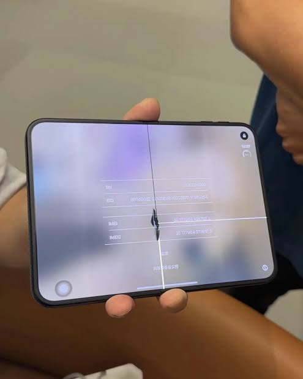

바탕화면 꼬라지 보소 ㅋㅋㅋㅋㅋㅋㅋㅋㅋㅋㅋㅋㅋㅋㅋㅋㅋㅋㅋ

바탕화면 꼬라지 보소 ㅋㅋㅋㅋㅋㅋㅋㅋㅋㅋㅋㅋㅋㅋㅋㅋㅋㅋㅋ
근데 교체해도 금방 똑같이 될텐데 의미가 있나 ㅋㅋㅋ
주기적으로 디스플레이 새거교환 개꿀
디스플레이 문제가 아닌걸로 알고있는데 교환해준다고 의미가 있나?
환불해준다고 하던데 물량 딸려서ㅋㅋ
애플케어 있어야만 아님?
처음 교체 발표할때는 그랬는데
폴드 안써봄? 힌지랑 내부디스플레이는 일체형부품이라 삼성에서도 그렇게수리해준다;
??? : 힌지가 불량이라서 힌지만 교체해드립니다. 디스플레이여?? 그건 왜요?? 고객 과실 아닌 증거 있나요?? 애플케어 있으시죠??
폴드 써본사람은 알겠지만 힌지랑 내부디스플레이는 하나임. 삼성에서도 힌지쪽찍힘있으면 내부디스플레이도 같이갈아야되고 내부디스플레이 나가면 힌지도 같이갈아준다 애플케어에서도 힌지 따로 명시 안해놨고
하도겐!
째용째용파 ㅋㅋㅋㅋㅋ
폴드가 진짜 저거보다 100배는 튼튼한데 파손스트레스가 꽤 있었는데 저건 진짜 제대로 못씀 폰
전량 폐기
저런쓰레기를.....
아니 할꺼면 애플 사장을 넣어야지 ㅋㅋㅋ
교체해주기전까지는 그냥 즐기는거야~!
...교체해주는거지?